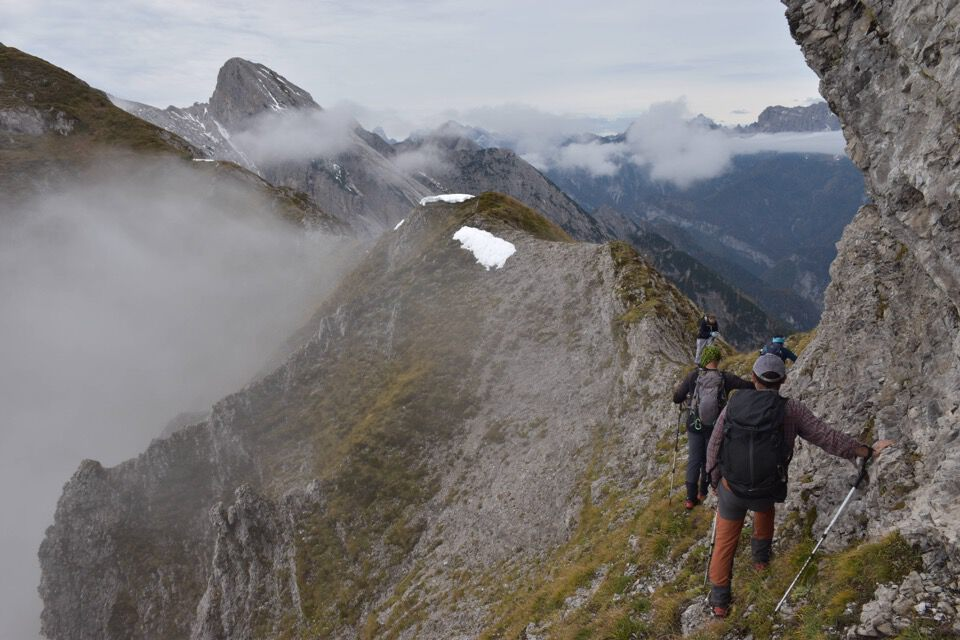

Cima Pussa.
Torrioni antropomorfi verso il Libertàn.

Esplosione di colori verso le Medàte.
Senòns.

E se salissimo sulle Caserine così siamo sicuri di arrivare sopra le nubi e non sotto?
No, venite di qua.
Un prato verso il cielo.

Il dente aguzzo del Burlàt.
Cengle Fornezze.
Le nubi ci fanno i dispetti...

...ma di colpo ci fanno avere magnifiche visioni verso luoghi remoti.
Un po' titubante faccio strada.
Contento Kelen?
Caserine Alte.
Come la prua di una nave sui cieli tramontini.
È ora di scendere.
Un salto nel vuoto.
Viandanti sopra i cieli di Tramonti.
La leggendaria casera Cuèl al termine del Canal Grande di Meduna.
Non fosse stato per le nubi...